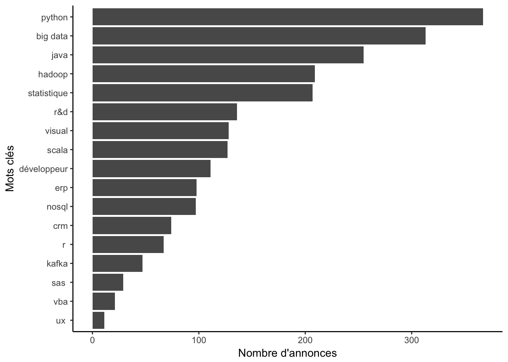
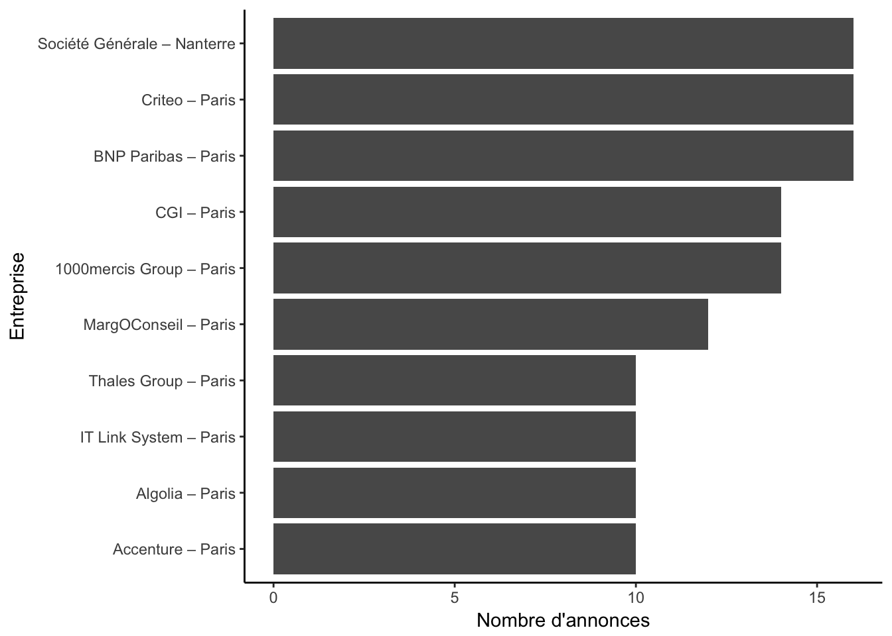

Je me suis mis à la place d’un candidat, et je suis allé sur un site d’annonces de postes, et pour le mot clé “data scientist” à Paris, j’ai trouvé plus de mille annonces récentes. Je me dis dit que ça ne doit pas être facile pour les candidats.
Que diriez-vous d’un site où vous postez votre CV, et il vous sort les annonces selon la pertience?
Les RH des grandes entreprises peuvent recevoir des milliers de CV pour un poste. Si le tri est fait manuellement, cela peut représenter un travail conséquent. J’ai entendu dire que certains ont des outils automatisés.
Si vous avez des retours sur ces outils, n’hésitez pas à commenter.
Les recruteurs ont à la fois un grand de CV et un grand nombre de postes à pourvoir. Finalement, ce sont eux qui avez le plus besoin.
Je sais que certains ont des “robots”, qui ne fonctionnent pas toujours très bien d’ailleurs.
Dans un tel contexte, il semble évident qu’il faut automatiser le premier tri.
Dans l’exemple qui suit, je me suis mis dans la peau d’un candidat qui cherche un poste de data scientist…
D’abord, il faut récupérer les annonces. Pour ça, il ne s’agit de copier-coller les textes à la main, mais utiliser la technique de webscraping.
Pour cet exemple, j’ai récupérer près d’un milier d’annonces.
L’analyse globale des annonces peut être intéressante, cela permet de connaître le marché du travail, et les compétences demandées.
J’ai choisi quelques mots, et compté de nombre d’anonces qui les contiennent. On pourrait trouver des mots clés intéressants à partir de toutes nos annonces. Pour le moment, j’ai sélectionné quelques uns à la main. S’il y a ceratins mots qui vous intéressent, n’hésitez pas à commenter.

On peut aussi segmenter les annonces, et trouver des différents types de data scientist:
Pour cela, j’ai besoin de votre aide, dans le lien suivant, vous pouvez rajouter des mots clés, et donner les pondérations correspondantes: lien Google sheet: compétences data science
On peut compter aussi le nombre d’annonces par entreprise, et visualiser les entreprises qui ont publié le plus d’annonces.

Pour un candidat qui souhaite classer les annonces, on peut définir une liste de mots clés avec des pondérations:
Pour cet exemple simple, j’ai mis les pondérations à la main, mais il est aussi possible de définir ces pondérations de façon analytique avec le CV.
Pour les annonces, je n’ai pas mis de pondérations.
| Mot.clé | Pondération |
|---|---|
| hadoop | 2 |
| big data | 2 |
| scala | 2 |
| r | 10 |
| sas | 6 |
| r&d | 2 |
| statistique | 10 |
| ux | 0 |
| nosql | 0 |
| kafka | 0 |
| visual | 8 |
| crm | 0 |
| python | 6 |
| java | 0 |
| développeur | 8 |
| erp | 0 |
| vba | 0 |
Ainsi, par rapport au listing, on peut l’afficher selon l’ordre décroissant de la distance.
L’analyse des mots-clés uniquement n’est certainement pas suffisante. Mais en pratique, le fait de disposer de toutes les annonces nous permet d’aller plus loin.
Que pensez-vous de cet exemple ? Avez-vous d’autres idées d’analyse ? N’hésitez pas à commenter.
Copyright © 2016 Kezhan SHI